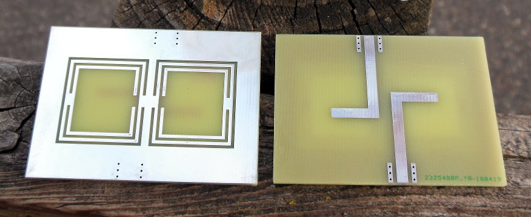
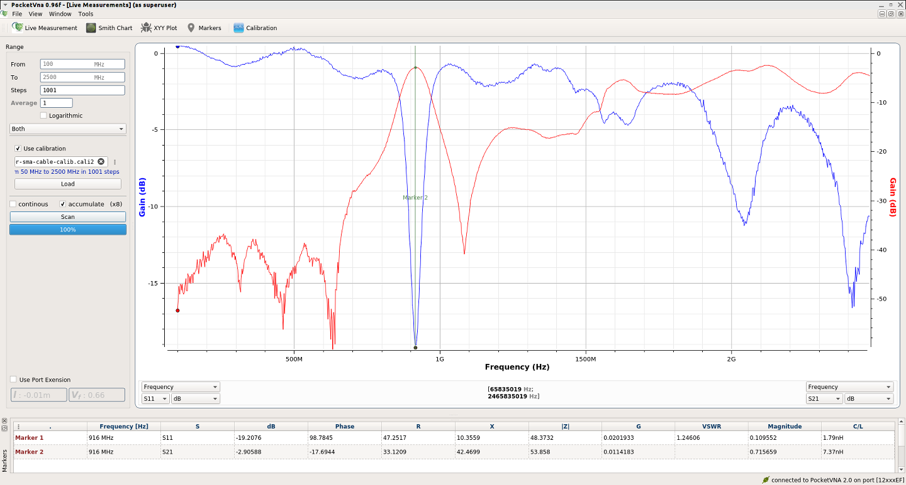

Home: Planar PCB Radio Filters


In this technique defective ground structures on printed circuit board are used to create C-shaped open loops. The open loops resonate because of the capacitance across the slot and the inductance across the the mouth. The two resonators are coupled together by the small 'gap' in the C-shaped slot (a gap in a gap is a metal) next to each other. Radio power is put into one resonant open loop by placing a microstrip line over the top of it. When the frequency of the incoming RF power equals the frequency high enough to fit and resonate in the open loop it is then coupled to the next and out through the microstrip on top of that.

In order to tune them you increase the capacitance by making the slot thinner and increase the inductance by making the mouth of the c-shape larger.
These designs have the advantage that they can be very small relative to wavelength (0.2*0.13 wavelength) and have little periodic/harmonic behavior. But because of the way they 'turn on' when the frequency is high enough they are better at blocking below the passband than above it.
This is my implementation in an EM simulator, and eventually in kicad, of the general design concept from the article, "Develop a BPF from a Compact DGS LPF" by Ahmed Boutejdar published on Aug 30, 2016.
Final size was 6.7*4 cm on 1.6mm thick FR4 for 900-930 MHz -40dB return loss (-3dB from 800-1100 MHz) and 0.5 dB insertion loss 900-930 MHz.
But a simple DGS BPF was not very good. So I combined the techniques from multiple other papers and ended making a DGS with an open loop in an open loop with my own novel microstrip coupling method and far superior performance. That can be see in the gif on the right and under the "Yo dawg" page anchor in the menu below.
[comment on this post] Append "/@say/your message here" to the URL in the location bar and hit enter.
Well, mostly because someone (sort of) asked me to design a bandpass filter but I didn't know how. So I thought I'd try to make one for my own wireless LAN transceivers which use the 902-928 MHz band as a learning experience. A lot of people suggested hairpin and other designs but I wanted something that would be small and without harmonics. After a series of searches for "electrically small bandpass planar PCB" and reading many not quite right papers to get an idea of the field I narrowed it down to a DGS, found the above article, and went to it.
I *highly* recommend you pick a grid size that has clean multiples. I usually start with 0.25mm and work in millimeters as units. And never attempt to use the centering tool, either horizontal, vertical or both. It will create structures which are offset from the grid and cause all sorts of problems. Center by hand.
In order to have something other than a flat metal rectangle as a ground plane in Sonnet you have to go to the 'Circuit->Dielectric' configuration and then add another air layer below your PCB dielectric layer. After that you end up with 3 layers: 0, 1, and GND. 0 is the top metal, 1 is the ground plane of the PCB, and GND is the metal of the virtual metal box that surrounds all Sonnet simulations. In order for the newly created layer 1 "ground" layer to work it *has* to be connected to the actual GND box at least somewhere.
I wasn't really sure about what dimensions would be required for ~915 MHz so I just winged it. I also just guessed at the exact shape of the resonators cut out with the C-shaped gap in the ground plane. I figured squares would work and they did. I basically just eye'd the general ratios from Ahmed's article and then simulated it to see what would happen. My first try was a great bandpass for about 1400-1600 MHz. So that just meant increasing the size of everything in iterations until I got down to around 900 MHz
The are just two important things to keep in mind when you start. The width of the slot determines the capacitance in the resonator and the mouth of the C-shaped slot determines the inductance. Keep the slot width small and optimize it first. Then tune by adjusting the mouth height.
Notice the thinness of the top and bottom edges of the ground plane in this one. This was because I had to expand the resonator size but didn't want to re-size the box because that'd mean re-centering and balancing everything by hand. These thin edges caused bad performance.

Once I got close I realized I could fine tune the frequency of the pass up or down by either squeezing the size of the 'mouth' of the C-shaped resonator or increasing it. Additionally, the outer ring of the ground plane (layer 1) matters for the resonant frequency. The narrower the outer ring of conductor is around the resonators the higher frequency it'll resonate at. So you can increase the size of the outer ground plane to push the resonant frequency down as well. These two parameters, along with the size of the C-shaped resonator box, allow for pretty good control of the resonant frequency of the bandpass.
I always use 1.6mm FR4 dielectric since it is the cheapest to have fabricated and it's okay for my uses. That means for a 50 Ohm microstrip the width should be 2.54 mm. But that doesn't fit the grid well. So I use 2.5 mm traces instead. That gives 55 Ohm traces and that's well within the tolerances of manufacture and other things.
The length of the microstrip over the resonators on the ground layer is directly proportional to the coupling. If it is very short and doesn't protrude over them very much on both sides then your resulting passband tends to split apart into two peaks. I didn't have a way to calculate how much coupling I needed so I just iterated and gradually extended the length until the simulation results looked good. I also noticed that as I increased the size of the resonator I needed to increase the *proportion* of the overhang of the traces over the resonator to maintain a single peaked passband.
But you can only push the length of the microstrip overhang so far. Eventually they move in so close together that high frequencies start to be able to jump the gap by capacitive coupling. This is what happened when I tried to scale the design to 440 MHz.

So off to search I went again with the phrase, "increase coupling of microstrip over resonator DGS". It was there I found *another* mwrf.com article called, DGS Resonators Form Compact Filters which offered a solution.
Apparently you can shift the microstrip line down from the center of the resonators to the edge, placing it over the gap itself along the bottom and stronger coupling is achieved with less trace length. Unfortunately in my simulations this hasn't panned out. I even tried a full redesign that copied that asymmetric resonator shape they used but it couldn't replicate it. It may just be another thing that only works at very high frequencies (ie >2GHz) where the microstrip traces are large relative to the resonator.
Because 900 MHz sims are smaller and run much faster I tested it there. The below plot shows my results when trying to shift the microstrip trace progressively down to the bottom edge. First the response splits, then it shifts frequency up and quickly goes away altogether. Black is the default, middle position. The pink and blue positions are the trace directly next to the bottom edge and a bit below the bottom edge respectively.

Other attempts to increase the coupling like adding impedance steps and things like meander lines did not work very well.
[many sims later...] All my prior designs failed because I had a fundamental misunderstanding of how they worked and so had been scaling things wrong. I kept assuming that the cut out slot was working by babinet's principle; that the slot was equal to it's mirror image of conductor in free space. So for larger wavelength the slot should be larger too.
But what really what mattered was the capacitance across the slot. And as I kept scaling up the slot width that became very small. And small capacitance causes resonance at higher frequencies so it backfired. Instead the size of the slot had to be kept small instead of scaling to larger size across as I shifted down target freq.
As the plots below show there still isn't quite enough coupling but it is recognizable as a decent, if wide, bandpass.

In the final version I expanded the simulation box size and expanded the ground plane so. This, along with a few other things like increasing the size of the 'mouth' of the C-shaped resonator coupling region and fixing some centering and alignment issues greatly improved (20dB) performance.

Because I paid attention to grid constraints and didn't use centering tools and because this design used the full space of the simulation box exporting gerbers was easy and I didn't have to turn up the grid resolution from 0.25mm before export.
To import the gerbers from Sonnet you open gerbview, select both layers in the import file dialog, and pick which to be front copper (F.cu) and which to be ground plane (B.cu). I got this wrong the first time but it was easy enough to just reverse when trying a 2nd time. Then File->Export to pcbnew and save as a .kicad_pcb file.

After opening the produced .kicad_pcb file all that was left was to align the imported structures to the kicad grid then apply full board F.Mask and B.Mask with the polygon tool (so no solder mask is applied) then outline the board with the line tool on the Edge.Cuts layer. It helps to make one line then select the line, go to properties, and set the line width to something small, like 0.05, so you can see more clearly where the edges of the board are at the corners when making the other lines.
After that it's just exporting using the 'Plot' button. I followed the very helpful guide over at oshpark to know which options to set. And because this board has no vias I didn't generate a drill file
Then it was just zipping up the resulting files form 'Plot' and uploading them to the PCB fabrication company. And waiting 2-4 weeks. That part is still going on.
Or was, this is 2 weeks later and the boards have arrived.


Since what mattered was capacitance across the slot and tried scaling the slot thickness down. Then I tweaked the mouth size a bit till the inductance worked out just right. Although there wasn't much improvement I was able to steepen the sides moderately and get about 6 dB deeper notch.
But mostly it was helpful because I could determinstically adjust the resonant frequency of the pass band.


While the passband characteristics of the DGS bandpass and it's lower stopband were acceptable that weak-ass upper stopband kept bothering me. So as I continued to do my literature review I kept coming across all these fancypants 'meta-materials' papers using split-ring resonators. To my eye they just look like an open loop in an open loop turned 180 degrees. I decided to give it a try.
While implementing it I noticed that I had a broader area of max current density along the middle. With my perpendicular microstrip traces I was just wasting most of it and I still had problems with the filter response being weak and splitting into two peaks. Then it hit me: what if I make the trace parallel to the high current density?
As you can see in the below screenshot/plots it worked really well. Well, not initially. At first it lead to some intense harmonic behavior. But after thinking about it for a while (and trying a number of nudges this way and that laterally, extending and shortening, I decided to try another trick I'd read about. By changing the direction of the microstrip trace in each resonator, but having them turn different ways, I could see if I could get them going in different (positive vs negative) modes. And it worked. The harmonic responses disapeared except for a little bump around 2 GHz where it used to be.

The passband performance is weaker but it's still under -15 dB S11 which is acceptable. And the frequency shifted up a bit due to the increased loading of the inner open loop. But that just means I'll have to make a *slightly* smaller one. Or, more likely and easier: increase the size of the surrounding ground plane.
But it turns out increasing the ground plane size doesn't help with the SRR design *at all*. There's seemingly no dependence on the width of the ground plane around it. Also there's no center metal ground inside the open loops. It's just kind of hanging there like a normal stripline. Is it still a DGS when it's not using babinet's principle and so much groundplane is missing? Probably not.
I honestly don't know what to call it know but I do know when I altered the design to add the center metalization back in and make it a purely slot-mode design in it didn't work very well.
The above plot and trace turn was just my first rough guess. Nothing more. After tuning the length a bit I was able to improve the response and fully eliminate the splitting as well as increasing the notch depth (two sides of a coin).

Every time I'm designing these filters I'm doing everything I can to make them as small as possible. They end up so small it almost seems a shame to put SMA connectors on them as it increases the area by a third.

With them it's 5cm*3.7cm. That may not sound like much but relative to the original it's a lot of extra area. And modeling the vias takes a lot of extra computation back in Sonnet when checking to make sure the SMA end launch pads don't change the response.


Except that that above example wasn't for 900-930 MHz. It had a center frequency of 960 MHz. So I re-did the design (calculated I needed to increase the size of the SRR elements by 5%) and re-implemented in Sonnet. After a little bit of tweaking the microstrip lengths I again, finally, had a good bandpass for 900-930 MHz.

It's definitely worth paying for DHL air shipping for boards. My second order a week after the first arrived first. And here's what the raw board made by jlcpcb looks like.
To be clear, this is measuring the boards in free space; without the metal box (1cm gap above/below) like is required to fulfill the sim parameters. The performance on the upper end of the stop band is degraded and the bandpass itself is only barely acceptable at -2.9 dB S21 and only -19 dB S11. Still, it's right on target freq at least.
This was a very fast case mock-up made out of copper-tape with the paper backing still attached. There was no soldering but it was actually 1cm of flat gap on each side. And this time I actually set the scales to the same size and aligned them so the graph isn't stupid.


In this one I drilled some holes slightly off angle so the PCB was ever so slightly tilted. Also the backside of the DGS only has like 5mm of free space instead of 10 like it should. This was another rush job. Because of the tilt and/or the spacing being too small the resonator response split. One moving to low and the other too high by about + and - 10 MHz respectively.
On the otherhand the insertion loss was mildly improved and the depth of the high side zero was majorly improved (-10 dB) and it pushed out much further into the stop-band.

I made 3 more designs for higher frequencies. So far I've only assembled and tested the dual band one. This design was a bit of a comprimise from the start but it is okay. I'm pretty sure I can bring the upper S11 dip back into it's proper place by filing down the legs a bit to increase the capacitance to the box ground.